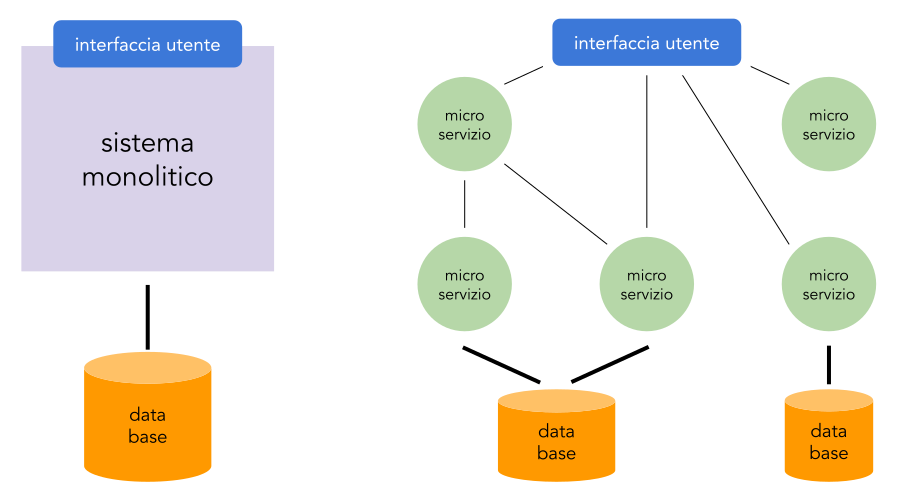

SOA
Una architettura orientata ai servizi (SOA: Service Oriented Architecure) è un metodo di sviluppo del software che utilizza componenti indipendenti ciascuno con un compito preciso accessibile in maniera definita.In questo contesto gli attori coninvolti nella produzione e nell'uso di un servizio sono sempre programmi: un programma usa servizi offerti da altri e a sua volta può offrirne ad altri ancora.
Principi base
Non esiste uno standard nell'implementazione di questo tipo di architetture ma alcuni principi basilari vengono normalmente seguiti:
- interoperabilità: ciascun servizio descrive le funzionalità che implementa e le modalità di accesso. Questo implica che qualsiasi cliente del servizio può accedervi indipendentemente dal linguaggio in cui è stato scritto
- astrazione: i clienti del sistema non devono conoscere la logica o i dettagli di implementazione con cui è implementato un servizio. Per loro i servizi devono apparire come una scatola nera
- accoppiamento debole: di un servizio si conosce il minimo indispensabile per poterlo utilizzare, in questo modo modificando l'implementazione di un servizio non si devono modificare i suoi utilizzatori
- granularità: ogni servizio dovrebbe avere delle dimensioni adeguate, è poi possibile usare più servizi "di base" per crearne uno composto
Come in tutte le architetture ci sono dei pro e dei contro. Da tenere sempre in mente che i contro dovrebbero essere utili perché in fase di progetto si mitighino tali problemi per quanto possibile e i pro funzionano per un sistema ben realizzato!
Vantaggi delle architetture SOA
- riuso dei servizi: una volta scritto un servizio può essere usato da più applicazioni
- interoperabile: utilizza protocolli di comunicazione standard e non dipendenti da uno specifico linguaggio
- manutenzione/aggiornamento semplificati: sviluppando ogni servizio in maniera indipendente posso cambiare tecnologie o aggiornare un servizio senza impattare sugli altri
- scalabilità: in caso di necessità si può intervenire sui servizi che sono usati più pesantemente
Svantaggi delle architetture SOA
- complessità architetturale: richiede dei meccanismi che servono a far comunicare i servizi il che potrebbe creare un collo di bottiglia o esporre il sistema a fragilità.
- dipendenza dai sistemi di comunicazione: ogni chiamata di un servizio passa per la rete e questo (dipende anche dalle tecnologie utilizzate) implica rallentamenti
- test e debug complessi: essendo coinvolti più elementi distinti trovare gli erori è più complicato
- versioni e documentazione: serve mantenere documentazione per permettere l'usabilità dei servizi e quando si fa una nuova versione bisogna mantenere anche la vecchia (il servizio A passa alla versione 2 ma il servizio B usa ancora la versione 1 e quindi bisogna mantenerle attive entrambe)
- avvio più complesso: l'avvio iniziale dello sviluppo del sistema è più complesso rispetto ad un sistema monolitico (singolo programma)
Microservizi
In questi ultimi anni questa architettura sta prendendo sempre più spazio, pur partendo dall'idea di SEO la porta ancora più avanti:
- ogni microservizio è indipendente: in genere non esiste un database unico e ogni microservizio ha il proprio ciclo di rilascio
- comunicazione leggera: spesso i servizi SOA hanno una struttura centrale per smistare i messaggi che qui manca, i microservizi usano infrastrutture esistenti come HTTP
- agilità nello sviluppo: ogni team può lavorare per suo conto e scegliere gli strumenti che preferisce
- orientata alla scalabilità orizzontale: è possibile replicare un singolo microservizio su più nodi
Proviamo a riassumere la situazione confrontando i due estremi: un sistema monolitico e uno a microservizi:

| Aspetto | Monolitico | Microservizi |
|---|---|---|
| struttura | Un’unica applicazione che contiene tutte le funzionalità | Applicazione divisa in molti servizi indipendenti |
| Deploy (pubblicazione del servizio) | Tutto il codice viene rilasciato insieme | Ogni microservizio può essere rilasciato separatamente |
| Scalabilità | Si scala tutta l’applicazione insieme (anche parti che non servono) | Si scala solo il servizio necessario |
| Comunicazione interna tra le parti dell'applicazione | Più veloce: chiamate locali (metodi, funzioni) | Più lente (in rete): scambio di messaggi con protocolli leggeri |
| Database | Un unico database condiviso | Più database separati |
| Gestione del codice | Più semplice all’inizio, ma cresce la complessità con le dimensioni del progetto | Codice distribuito, più gestione ma più flessibilità |
| Resistenza ai guasti | Un problema può bloccare tutta l’applicazione | Il problema resta confinato nel servizio |
| Tecnologie | Non è obbligatorio ma di solito un unico stack tecnologico e unico linguaggio di programmazione | Ogni servizio può usare stack diversi e linguaggi di programmazione diversi |
| Manutenzione a lungo termine | Difficile per applicazioni grandi | Più semplice, si lavora su un microservizio isolatamente |